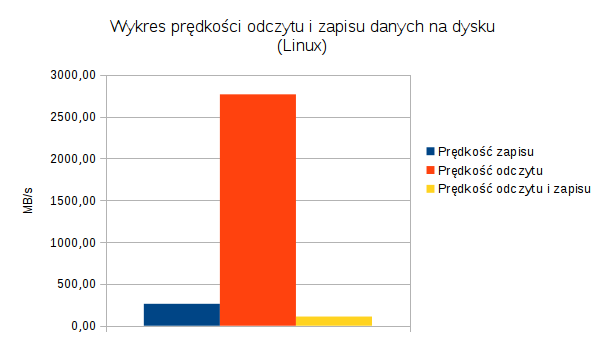

Test z użyciem programu dd
Wstęp
Test ten pozwala zmierzyć wydajność dysku pod względem szybkości odczytu i zapisu danych. Najlepszą formą pomiaru byłoby użycie dysku, czy partycji (np. /dev/sda6), jednakże ze względów praktycznych podczas testów wykorzystano plik znajdujący się w systemie plików. Użycie dysku/partycji pozwoli pomijąć funkcje związane z systemem plików (np. opóźnienie związane z czasem potrzebym na utworzenie odpowiednich wpisów i-node, bufory).
Przebieg i wnioski
Test wykonany programem dd polegał na odczycie, zapisie oraz odczycie i zapisie 1.1GB danych. Został wykonany na 7 komputerach z systemem Linux w wersji 3.16.0-23-generic. Wyniki zostały przedstawione w tabeli poniżej.
Tabela podsumowująca wyniki testów w systemie Linux
| Zapis (MB/s) | Odczyt (GB/s) | Odczyt i zapis (MB/s) | |
|---|---|---|---|
| Średnia arytmetyczna | 262.33 | 2.70 | 110.08 |
| Odchylenie standardowe | 36.76 | 0.74 | 50.61 |
| Wartość maksymalna | 299 | 4.20 | 213 |
| Wartość minimalna | 208 | 2.30 | 84.90 |
Wykresy prezentujące wyniki testów

Wyniki pokazują, że odczyt danych z dysku jest zdecydowanie szybszy od zapisu i jednoczesnego odczytu i zapisu danych na dysku.
Test z użyciem programu Bonnie++
Wstęp
Test ten pozwala zmierzyć prędkość odczytu i zapisu danych z uwzględnieniem właściwości systemu plików. Do właściwości systemu plików możemy zaliczyć operacje na metadanych (np. operacje na i-node) podczas tworzenia, usuwania małych/dużych plików czy sprawdzaniu rozmiaru pliku. Część systemów plików jest zoptymalizowana do operacji na metadanych w pewnej kolejności, dlatego test bada również losowo występujące operacje na metadanych.
Przebieg i wnioski
Test polegał na pomiarze:
- prędkości odczytu i zapisu danych
- ilość możliwych do wykonania przeskoków w obrębie pliku w przeciągu sekundy
- liczby operacji na metadanych, które można wykonać w przeciągu sekundy.
Test został wykonany na siedmiu komputerach z systemem Linux (w wersji 3.16.0-23-generic), Windows (w wersji 10), FreeBSD (w wersji 10.2). Niestety nie każdy system operacyjny posiada wsparcie dla wszystkich testowanych systemów plików, dlatego:
- na systemie Windows wykonano testy tylko na systemie plików NTFS (w środowisku Cygwin)
- na systemie FreeBSD nie wykonano testu systemu plików ext4 (możliwe jest użycie ext4 tylko w trybie do odczytu)
Tabele ukazujące wyniki pomiarów zostały pominięte ze względu na ich duży rozmiar. Są one dostępne w pliku ze szczegółowymi wynikami.
Wykresy prezentujące wyniki testów


System plików NTFS w przypadku pomiaru ilości sekwencyjnie utworzonych plików w przeciągu sekundy wypadł zdecydowanie najgorzej na systemie Windows (może to wynikać z narzutów środowiska Cygwin), najlepiej zaprezentował się na systemie Linux.
Systemy plików z rodziny ext wypadły na systemie Linux najgorzej pod wzgledem prędkości odczytu danych znak po znaku, znacznie lepiej prezentował się NTFS oraz ZFS. Sytuacja jest odwrotna w przypadku zapisu danych znak po znaku, tu króluje rodzina ext, a NTFS i ZFS prezentują się gorzej. Na systemie FreeBSD w przypadku odczytu znak po znaku najlepiej wypadł ZFS, a w przypadku zapisu ext3 oraz ZFS.
Systemy plików ext2 oraz ext3 pod względem ilości opertacji tworzenia i usuwania plików w systemie FreeBSD nie różniły się znacząco pomiędzy sobą.
Test z użyciem programu tiobench
Wstęp
Ten test został opracowany na podstawie testu znajdującego się w pakiecie Phoronix Test Suite. Pozwala mierzyć prędkośc operacji odczytu, zapisu oraz czas reakcji (latencja). Operacje te wykonywane są w kilku wątkach jednocześnie.
Przebieg i wnioski
Test został wykonany na systemie Linux (w wersji 3.16.0-23-generic).
Tabela podsumowująca wyniki testów w systemie Linux
| Prędkość odczytu (MB/s) | Prędkość zapisu (MB/s) | Średnia latencja podczas odczytu (ms) | Maksymalna latencja podczas odczytu (ms) | Średnia latencja podczas zapisu (ms) | Maksymalna latencja podczas zapsu (ms) | |
|---|---|---|---|---|---|---|
| Średnia arytmetyczna | 8 001.52 | 0.22 | 0.002 | 0.31 | 71.74 | 469.82 |
| Odchylenie standardowe | 1 674.42 | 0.03 | 0.001 | 0.57 | 9.68 | 581.66 |
| Wartość maksymalna | 8 960.57 | 0.27 | 0.001 | 1.16 | 79.96 | 1 341.9 |
| Wartość minimalna | 5 503.58 | 0.2 | 0.002 | 0.02 | 57.81 | 153.52 |
Wykresy prezentujące wyniki testów

Wyniki testu pokazują, że średnia prędkość odczytu wyniosła 8001.52 MB/s, zapisu 0.22 MB/s. Latencja podczas zapisu jest zdecydowanie dłuższa, niż podczas odczytu.
Podsumowanie
Na podstawie wykonanych testów nie można stwierdzić, który komputer z jakim systemem operacyjnym i systemem plików poradził sobie najlepiej z przetwarzaniem danych. Wybór najlepszego rozwiązania zależny jest od praktycznego zastosowania i to pod jego kątem należy rozpatrywać wyniki testów. Pewne systemy plików radzą sobie lepiej z odczytem danych (np. rodzina ext), a pewne z zapisem danych (np. ZFS, NTFS). W przypadku rozwiązania, ktore będzie wykonowało dużo operacji usuwania/tworzenia plików najlepszym rozwiązaniem byłby ZFS na systemie FreeBSD.
Dodatkowe informacje
Szczegółowe wyniki
Szczegółowe wyniki pomiarów każdego z testów znajdują się w poszczególnych arkuszach kalkulacyjnych pliku wyniki.ods. Do jego otwarcia wymagany jest program LibreOffice.